The search interface can be accessed here.
The search interface aims to give quick and powerful access to the corpus content. The interface is useful for:
The corpus overview page, shown in Figure 1, is the default entry point and this is also reached by clicking the ‘top’ link of any of the other pages. This lists all of the corpus files, with each list item offering details of the source and a clickable link to a context page for the corresponding file.
Figure 1: Overview page of the TSPC online interface
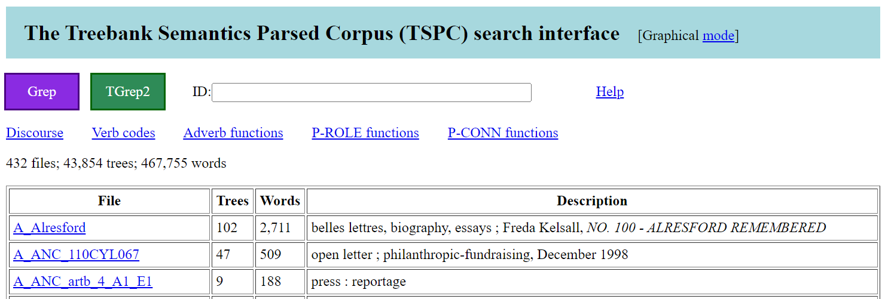The corpus overview page also contains links for reaching: the Grep and TGrep2 search pages, the various overview pages, and a page for accessing discourse segmentations. There is also an ID field box. A link is also provided for toggling the mode of the interface, which by default is set to show results graphically. A mode to show results with plain text is also available.
The corpus overview page, context page, and visualisation pages of the interface all contain an ID text field box. When the corpus overview page is open, the ID box is blank by default. With a context page, as in Figure 2, the ID box contains the name of the shown file.
Figure 2: Example context page of the TSPC online interface
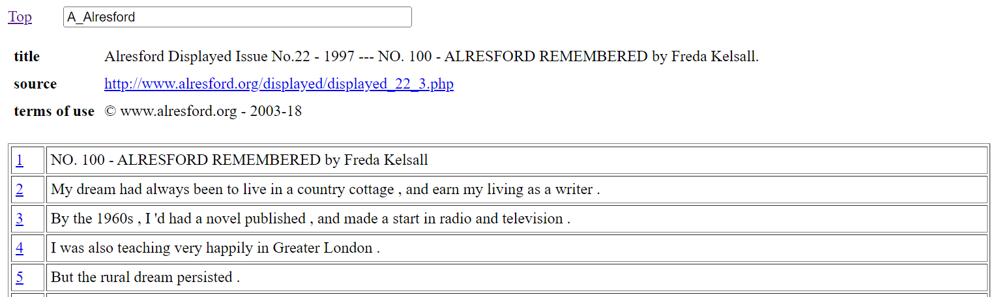With a visualisation page (see section 6 below), the ID box contains the full ID name of the shown parse analysis. Multiple full ID names can be entered into the ID box when they are space separated, in which case a visualisation for all the referenced parse analysis is shown. A full ID name for a given instance of parse analysis takes the form of a number followed by an underscore character (‘_’) and then the name of the file that contains the parse analysis.
The user is free to edit the content of the ID box, and then, by pressing the [ENTER] key, will jump to the corresponding page for the edited ID information.
If the ID text box has content and the overview page is shown, then the listing of files will be restricted to those files with names that contain the given content, ignoring case distinctions. With the corpus consisting of over four hundred files, this provides a useful way to zoom in on file collections, especially as related files have related names. If there is no match for the content of the ID text box, then the overview page is left with no listed files.
To understand the functionality of the interface, particularly the options for search, it is helpful to know about the underlying data format used by the TSPC.
Each corpus file is a text file containing instances of parse analysis separated by blank lines. Each analysis instance begins with a line that presents the overall word yield for the analysis, where a word yield is the extraction of the terminal nodes of the tree, but without zero elements like relative clause traces. The yield is presented between opening and closing brackets with the form: ‘=N(" ’ and ‘ ")’.
Following this opening line comes the parse analysis itself, with each word of the analysis placed at the end of its own line and accompanied by lemma information between curly braces with an initial semi-colon (‘;{’, ‘}’). Furthermore, each analysis line presents the path information from the root layer of the parse through to the word layer. If there are distinct non-terminal nodes with the same tag and the same preceding path, then extra marking is required to ensure these nodes are uniquely distinguished when considering multiple paths. The convention followed for extra marking includes ‘;@n’ for the n-th sister node of a shared preceding path. The last line of a parse analysis instance is the ID node for the instance.
As an example, (1) shows the twenty eighth tree from the file A_DICK_1952.txt.
This parse information of (1) as a tree with the default tree visualisation page of the interface is shown in Figure 3. Note that for this default tree page, the information in curly braces (word lemma and witness information) is hidden. This extra markup is shown by clicking the ‘Reveal’ link. Also, the text version of (1) is shown by clicking the ‘mode’ link, to toggle the interface to text mode.
Figure 3: Tree visualisation from the online interface of the TSPC
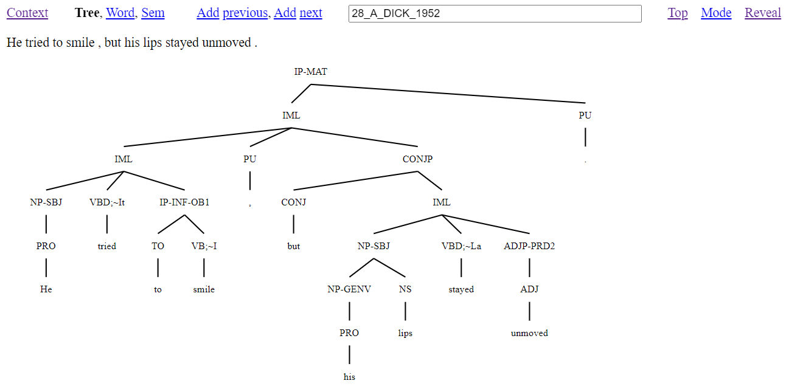The annotation of (1) includes word level analysis which involves deciding on the segmentation of words together with the assignment of a word class and word lemma to each segmented word. Word segmentation is typically straightforward for English, as word spacing and punctuation can usually be followed. However, it is also possible for a sequence of words to behave syntactically in an idiomatic way (e.g., ‘as long as’, ‘with regard to’, ‘by the way’). Such word sequences are analysed as if single words, with each component separated by underscore characters in a single character string.
From word analysis there is then the projection of groupings either in the creation of phrases or clause layers of structure. To the groupings of structure there is then the assignment of form and function information. This results in tree structure for isolated utterances, typically sentences.
More particular aspects of the annotation scheme demonstrated by (1) are:
This illustrates how within a single tree there is a lot of information to capture sentence coherence. In addition to the above form information, structural conventions have to be followed to ensure that control dependencies and across the board extraction dependencies are appropriately inherited. The structural conventions are a major diagnostic for choosing between whether to annotate structure that involves subordination (as seen in (1) with IP-INF-OB1) or coordination (as seen in (1) with CONJP).
While not seen in (1), there can also be indexing information, but indexing is used sparingly, only being required to ensure that elements that have crossed structural levels (e.g., long distance dependencies) can be linked back to their locations of interpretation.
The data format of (1) is easy to edit, especially with a text editor capable of multi-line editing. It is notable that edits will always maintain balanced regularised tree structure, and that tree changes can be readily observed with tools like diff (Hunt and Mcilroy 1975). But what is most significant is that the format allows for quick and simple line and table post-processing. As a case in point, an overview can be returned for items that have a particular word class. (This is accessed from link items that make up a listing of all tags, displayed on the Grep or TGrep2 pages when the search field is empty.) Figure 4 shows the result for all words in the corpus that are tagged RPRO (relative pronoun). This information is presented with the lemma of the word serving as a link to a Grep search for the lemma followed by a list within brackets of the particular attestations of the lemma with a count of instances after a colon.
Figure 4: Words marked as relative pronouns (RPRO)
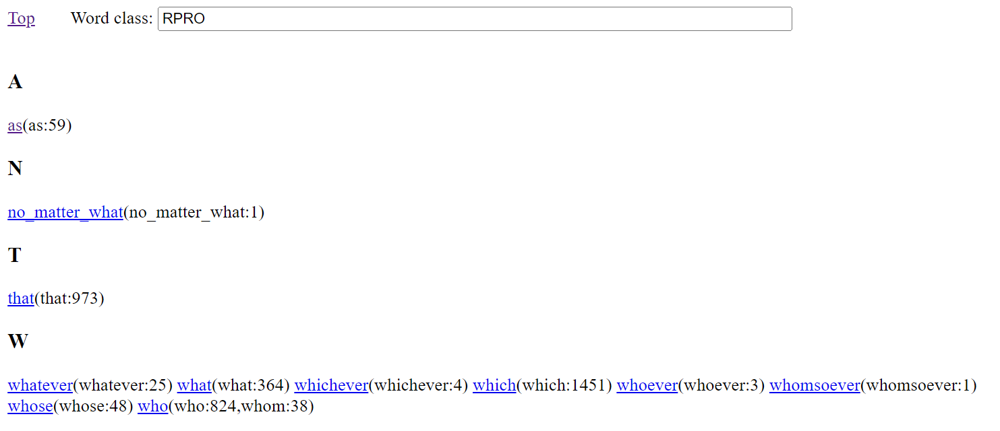As an example of a line extracted overview which requires information beyond the word class layer of structure, Figure 5 gives a table with function markings (ABS=absolute, BNF=benefactive, CNT=contingency, COM=comitative, etc.) and the lemmas of prepositions that realise the particular function, all with counts, and also serving as clickable links to Grep searches for probing deeper into how the adverb lemma with the particular referenced function occurs in the data (demonstrated below in section 5.1 with (2)).
Figure 5: Function marking with prepositions (P-ROLE)
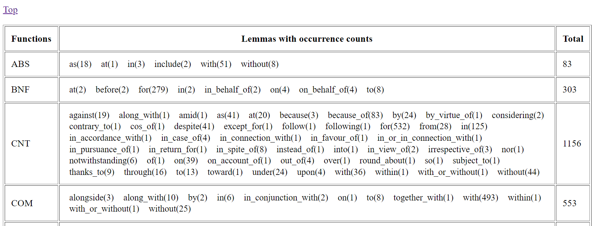The interface provides two different methods for searching the corpus: the Grep page (section 5.1) and the TGrep2 page (section 5.2).
The Grep page gives a link for returning to the corpus overview page, and a text field box for entering a grep search pattern. There is a second field box for entering a start number (explained below). If the search text box is blank, then there are tables listing the full tag set used in the corpus. A search begins when the ‘Search’ button is clicked, or after a search pattern is entered into the text field box and the [ENTER] key is pressed.
Search is made using the grep command (Magloire et al. 2021) under a recursive call (grep -nr) in a directory that contains the corpus data in the native corpus format described in section 3, and illustrated with (1). Aside from making changes to the search pattern, there is no other way to restrict the searched data. With Grep, results are gathered from the source data files almost instantly.
Figure 6 illustrates using the Grep page to find instances of the string against in the corpus. The results page tells us the number of lines found to match the search expression. This is followed by a display of the results in a tabled format with three columns. The first column is the hit number following corpus order, that is, with line matches taken from files following an alphanumeric sort of the corpus filenames. The second column consists of possibly coloured cells that contain the full content of a matched line from the corpus data. The third column contains information about the line number followed by an underscore character (‘_’) and then the filename for the reported content. This line number and filename serve as a link to a tree page for the overall linked instance of parse analysis, with the terminal node for line content highlighted in the resulting tree of the reached tree page.
Figure 6: Grep search for against
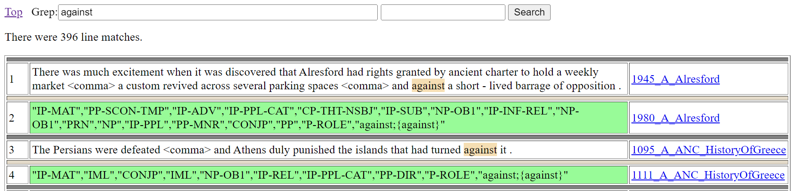The colouring of cells in the second column depends on the cell content as follows:
The colouring of cells is a notable aid for being able to easily pick up on differences in the annotation, especially as a search can bring together lines from throughout the corpus.
As figure 6 demonstrates, a Grep search is useful for searching through the yield lines of the annotation. Any search that involves a space character will automatically be restricted to finding its matches from only yield lines. When the matched line is a yield line from the corpus data which (as seen with (1) above) consists of a line with opening and closing brackets with the form: ‘=N(" ’ and ‘ ")’, these opening and closing brackets are removed from the shown result and the segment of the line that matches the search expression is highlighted.
Search pattern (2) will find instances of the lemma {against} restricted to having the P-ROLE (preposition) word class that occurs in a preposition phrase with -CNT (contingency) function.
Note that the double quotes character (") cannot be used in grep search patterns made with the interface. In pattern (2), mention of double quote characters is avoided with use of the dot (‘.’) character, which matches any single character. Figure 7 shows the top of the results page from searching with (2), with the number of matched lines now restricted to nineteen lines.
Figure 7: Grep search for lemma {against} occurring as a preposition with contingency function
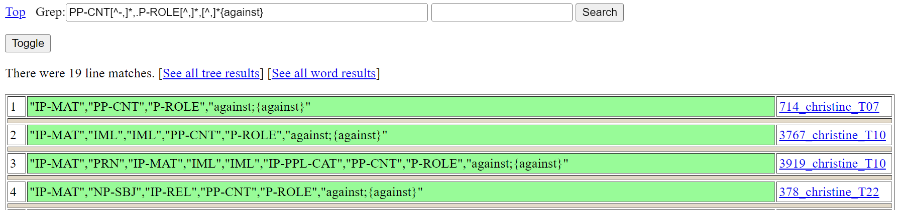If there are no tree yields included in the results and the number of matched lines is less than 100 (as in Figure 7), then a ‘See all tree results’ link is provided for opening in a tree page a display of all results as trees and a ‘See all word results’ link is provided for opening in a word page a display of all results.
Up to 2500 matched lines are returned following corpus order. That returned matches follow a set order is important because this allows for the potential of contextual information being seen across returned lines. Quite where in the corpus order the search results start from is established either (i) by a start number entered into the number field that is adjacent to the text field box for entering a grep search pattern, or, (ii) when the start number field is empty, through the random creation of a start number when the number of returned results exceeds 2500. You can see a different batch of up to 2500 results by re-running the search with a different start number.
With returned line results following corpus order, full constituents appear as adjacent lines when the search expression matches constituent level nodes. This is demonstrated in Figure 8, with its search expression finding IP-REL (relative clause) nodes. Results start from line match 26975.
Figure 8: Search for IP-REL (relative clause)
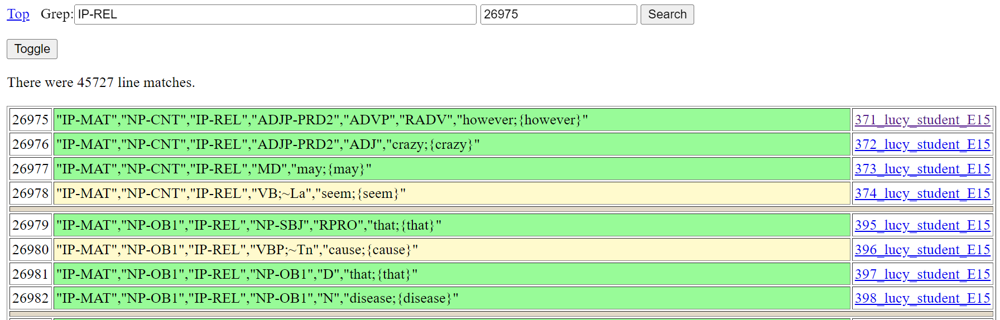When there are no yield line matches, a ‘Toggle’ link appears. Clicking ‘Toggle’ of Figure 8 opens the page of Figure 9. Clicking ‘Toggle’ again returns back to Figure 8.
Figure 9: Search for IP-REL (relative clause) after toggle
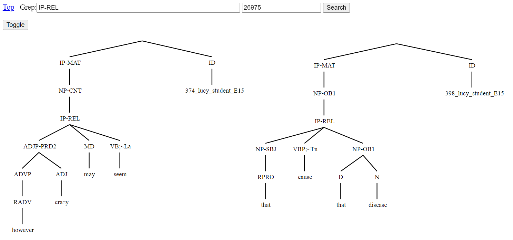The page of Figure 9 shows the same results as Figure 8 only as tree fragments. Tree fragments are given an ID node that consists of a line number corresponding to the last line that goes into making up the tree fragment and its filename. These ID nodes serve as a link to a tree page for the overall linked instance of parse analysis, with the terminal node for the numbered line content highlighted. Other nodes serve as links to trigger a Grep search for the node label that opens to a page displaying tree fragment results. All this functionality assists finding related examples including inconsistencies and errors in the annotation.
The TGrep2 page gives a link for returning to the corpus overview page, and a text field box for entering a TGrep2 search pattern. There is a second field box for entering a start number. There is also a pull-down-selector for choosing between two methods for displaying results:
If the search text box is blank, then there are tables listing the full tag set used in the corpus. A search begins when the ‘Search’ button is clicked, or after a search pattern is entered into the text field box and the [ENTER] key is pressed.
Search is made using the tgrep2 command (Rohde 2005) over all the corpus data in a binary database built from data that was first converted into a bracketed tree format. With conversion to bracketed trees, any ‘;@n’ markings of nodes added to keep nodes distinct under the native corpus format are removed, since nodes appear only once within the bracketed structure and so are always distinct.
Aside from making changes to the search pattern, there is no other way to restrict the searched data.
TGrep2 search patterns consist of expressions to match nodes and relationships defining links or negated links to other nodes. Nodes of searched trees are matched either with simple character strings, or OR'd character strings, or extended regular expressions. A complex node expression consists of a node expression (the master node) which is followed by relationships. Also, nodes can be assigned labels and may be referred to elsewhere in the pattern by those labels. For a full explanation of this query language, click the ‘TGrep2 Search Guide’ link, which appears when the TGrep2 page is opened without a search pattern.
As an example, consider pattern (3) which finds free relatives.
The tree relation ‘<:’ of (3) states that a matched IP-REL node is the only daughter of a matched NP node. The NP node is the master node found by the overall pattern. Brackets ensure that other conditions of the pattern concern the need for the matched IP-REL node to contain a relative word (that is, a word tagged as either RPRO, RD, or RADV) without there being a distinct intervening IP-REL layer. The condition for no distinct intervening IP-REL layer involves a link (=i) back to the node that will have been matched as the relative clause part of the free relative (/^IP-REL/=i).
Figure 10 illustrates the display of results as tree yields. Content matched by the master node of the query is highlighted. Zero elements (e.g., relative clause traces) are typically not shown in tree yields but will appear highlighted if they happen to be all that is matched. Each returned tree yield with its single highlighted segment is given a hit number. The hit number doubles as a link to the tree view page for the given tree yield. Up to five hundred yield results are shown in corpus order. If there are more than five hundred results, you can see different yields by re-running the search after changing the number of the start number field (which is 146 in Figure 10).
Figure 10: Example of tree search results as tree yields
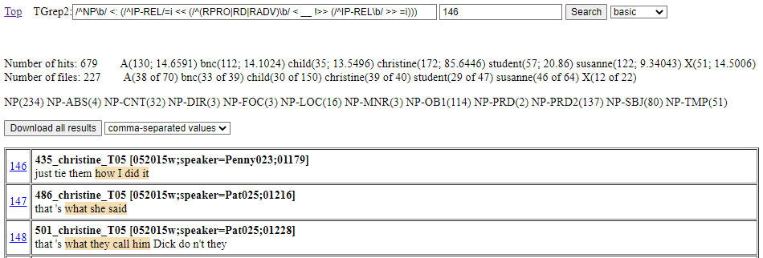Above the table of individually shown tree yields, frequency information about all the search results is shown. This includes a count of the overall number of hits and a count of the overall number of files to which hits apply. These hit and file numbers are followed by a breakdown of where the numbers come from in relation to the seven sources distinguished on the Front page.
In the breakdown for hits, two numbers are given separated by a semi-colon: the first number is the raw number of hits, the second number is the result of calculating the number of hits per 10,000 words. In the breakdown for files, there is information about the overall number of files per source division.
These breakdowns give a rough idea about the origins of results. For example, with Figure 10 we can see that free relatives are most frequent with the christine (spoken BNC) dataset (85.6446 instances per 10,000 words) and that there are hits with almost every file (39 of 40). A more thorough analysis of hit origins could be undertaken by downloading all the search results.
In addition to overall hit and file numbers, there is a further list that collects the labels of all the nodes matched as the master node for a search hit. Each distinct label is followed by a count result for the number of times the label matched as a master node. For Figure 10, while all master node matching labels start with NP to match the initial node regular expression (/^NP\b/) of the search expression, the breakdown is useful for telling us about the different function roles of the matched noun phrases.
Figure 11 illustrates the display of results as graphical trees, with displayed trees having a highlighted node that is the match for the master node of the search pattern. There is also a link for accessing the tree in a tree view page and a yield, with content matched by the master node highlighted. Up to fifty tree results are shown in corpus order. If there are more than fifty results, you can see different trees by re-running the search after changing the number of the start number field (which is 146 in Figure 11).
Figure 11: Example of tree search results as tree graphical trees
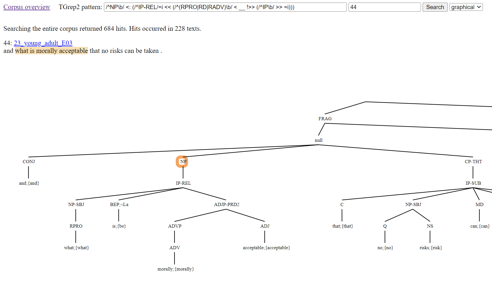You can download all TGrep2 search results by clicking the ‘Download all results’ button. The download will give as many entries as there are hits reported, with a single hit per entry. Results are listed in corpus order, so a re-run of a download will give you the same download. There is a pull-down-selector for choosing between two methods for obtaining results:
The comma-separated values format can be opened by a spreadsheet program. Each entry consists of a row with four columns. The first column is the ID for the example. The second column is the yield of content before the master node hit. The third column is the yield of the master node hit. The fourth column is the yield of content after the master node hit. For example, pattern (4) finds indirect objects that directly contain a relative clause, which obtains the downloaded comma-separated value results of Figure 12.
The trees of a bracketed download are formatted to be compatible with the CorpusSearch program (Randall 2009; http://corpussearch.sourceforge.net/CS-manual/YourCorpus.html). For example, pattern (4) obtains the downloaded trees of Figure 13.
Figure 13: An example of downloaded results in the bracketed format
( (IP-MAT (NP-SBJ (D This;{this})) (VBD meant;{mean}) (CP-THT-OB1 (IP-SUB (C that;{that}) (NP-SBJ (N loyalty;{loyalty})) (VBD forbade;{forbid}) (NP-DOB1 (PRO her;{her})) (IP-INF-OB1 (TO to;{to}) (VB tell;{tell}) (__NP-OB2 (NPR Philip;{Philip}) (PU <mdash>) (IP-REL (NP-SBJ (RPRO who;{who})) (MD would;{will}) (NEG n<apos>t;{not}) (HV;~cat_e have;{have}) (IP-PPL-CAT (VVN believed;{believe}) (NP-OB1 (PRO her;{her})) (PP-CNT (P-ROLE in;{in}) (NP (D any;{any}) (N case;{case}))))))))) (PU .)) (ID 113_lucy_bnc_C05@24))Under CorpusSearch format, every tree has a ‘wrapper’. A wrapper is a pair of unlabelled parentheses surrounding the tree content together with an ID node. An extension consisting of the ‘@’ character and a number is added to the ID node of each tree. Following depth-first order, this number picks out the node that matched as the master node. In addition, the label of the picked out node is also prefixed with two underscore characters (‘__’).
The interface provides three different visualisations of parse analysis: the tree page (section 6.1), the word page (section 6.2), and the graph page (section 6.3). These pages all have an ID text field box that will contain the full name(s) for the analysis being shown. The content of the ID box can be edited, as described in section 2.1.
At the top of each page, in addition to the ID box, there is also:
The tree page shows a tree visualisation of an instance of parse analysis, as seen with Figure 3 above. If multiple parse analysis IDs appear in the ID text field box, then a tree for each ID is shown. In the case of multiple trees being shown, each tree is preceded by an ID heading that works as a link for opening the same tree in a new tree view page. Hovering the mouse over nodes will expand them, as an aid for grabbing attention to particular tree nodes in class demonstrations. Also, tree nodes can be clicked and will take you to a Grep search for the clicked node element.
If parse IDs appear with an appended @ symbol followed by a list of comma-separated numbers, then nodes for the numbers following sequential depth-first order positions will be highlighted. The node for the first number of the list will be highlighted orange while all subsequent nodes will be highlighted green, as in Figure 14. (The numbering for all nodes can be seen by clicking the ‘Reveal’ link.)
Figure 14: Tree visualisation of the online interface of the TSPC with highlighted node
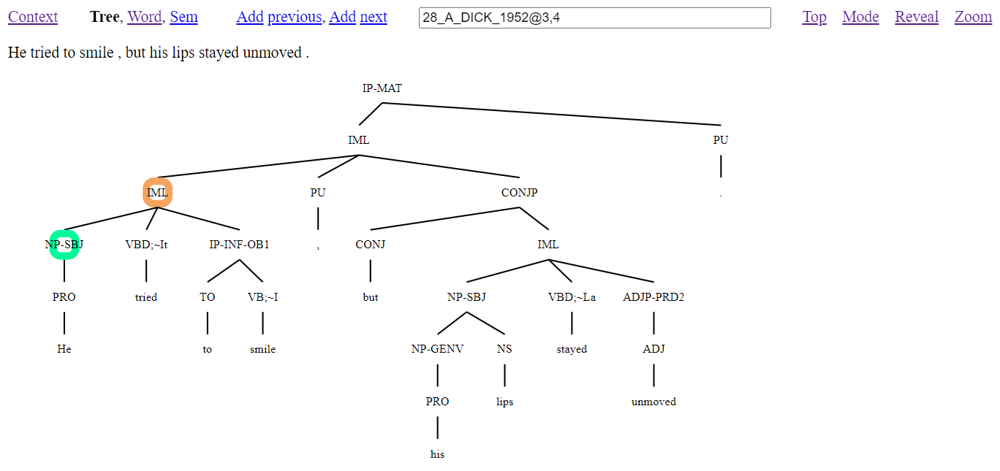Presence of a highlighted orange node, as in Figure 14, will also create a ‘Zoom’ link. If this is clicked, then the view will change to make what was the highlighted node the root of the shown tree, as in Figure 15. Clicking the ‘Zoom’ link again will return the view back to the full tree. This feature is especially useful for presentations with the corpus.
Figure 15: Tree visualisation of the online interface of the TSPC from selected node
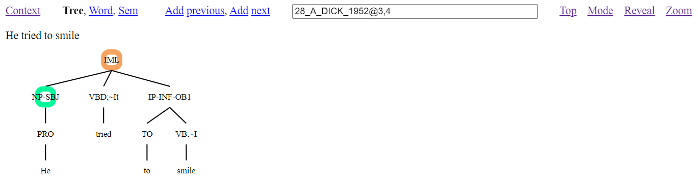When the tree page is entered from a TGrep2 search result, the number for the node matched as the master node by the search pattern will be included with the parse ID and so this node will be highlighted orange.
The word page shows the word analysis of an instance of parse analysis. If multiple parse analysis IDs appear in the ID text field box, then word analysis for each ID is shown. Figure 16 illustrates the word page created from the same zoomed content as Figure 15.
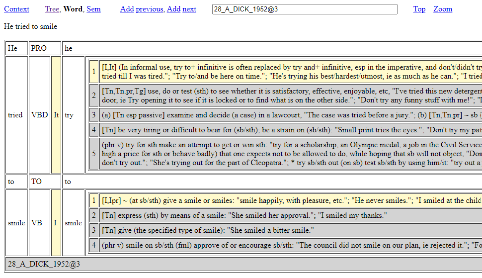As Figure 16 shows, word analysis is presented in a tabled format with three main columns for words. The first column is for a word as it occurs in the data. The second column presents the word class of the word from the first column. If the word is a verb associated with a grammar pattern, then this pattern information is also presented and highlighted with yellow. The third column presents information about the word of the first column with minimally a word lemma. If the word is a lexical verb, then the grammar pattern information is used to highlight compatible sense definitions with yellow from a dictionary database, while other sense definitions for the word are shaded grey. For local use when licensing permits, sense definitions with associated verb codes can be sourced from Cowie (1989). If the word is a verb without a grammar pattern, then all the cells containing sense numbers for the associated sense definitions are coloured red, reflecting outstanding annotation work.
The graph page shows a graph visualisation of semantic dependencies for parse analysis produced by the Treebank Semantics evaluation system (Butler 2021). This evaluation system works as an ordered collection of discourse referents (see e.g., Kamp and Reyle 1993, Dekker 2012) from input expressions and then their subsequent release across the span of the input discourse. Nodes of displayed graphs correspond to the collected discourse referents, including event referents for verb contributions, with dependencies cashing out the relationships that are calculated to hold from the dispersal of the referents as the derived information content of the discourse.
With the interface, if multiple parse analysis IDs appear in the ID text field box, then a single graph is calculated from all the parse analysis of the given IDs. Figure 17 illustrates a dependency graph of the online interface calculated with the parse information of two sentences, including (1) as input. This depicts the anaphoric and syntactic control dependencies from (1) as resolved connections to the “Fomar” discourse entity node inherited from the contribution of the previous sentence.
Figure 17: Graph dependency visualisation from the online interface of the TSPC
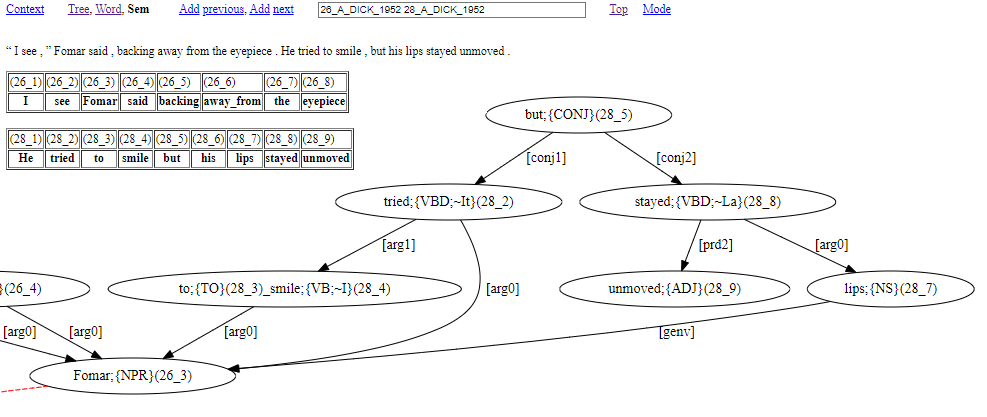In a graph like Figure 17, word content from source sentences is always accompanied by (i) content between curly braces (‘{’, ‘}’) to say the word class of the word, and (ii) numbering inside round brackets (‘(’, ‘)’) to say the word position within the source sentence(s). Word position numbering involves two numbers separated by an underscore character (‘_’). The first number says which source sentence the word belongs to. The second number says the position of the word within its source sentence.
Square bracket content tells us about how words function, e.g., [arg0]=logical subject, [arg0]=direct object, [prd2]=subject predicative role. It is most typical for square bracket content to be part of the label for a directed arrow that connects graph nodes.
Most words from source sentences have a presence within the corresponding graph, however the contribution of some words has to be seen in terms of consequences for graph nodes and their dependencies. Missing words include words that have a reference making contribution that is captured by node presence within the graph. These words can be:
Note that unbound pronouns do have graph presence, as seen with He in Figure 18 below.
Other words with no graph presence are:
It is also possible for graph content to involve the ‘#’ symbol. This marks a word absence due to an elided phrase head or verb from the source sentence. For example, consider the graph page result of Figure 18.
Figure 18: An example with elided content
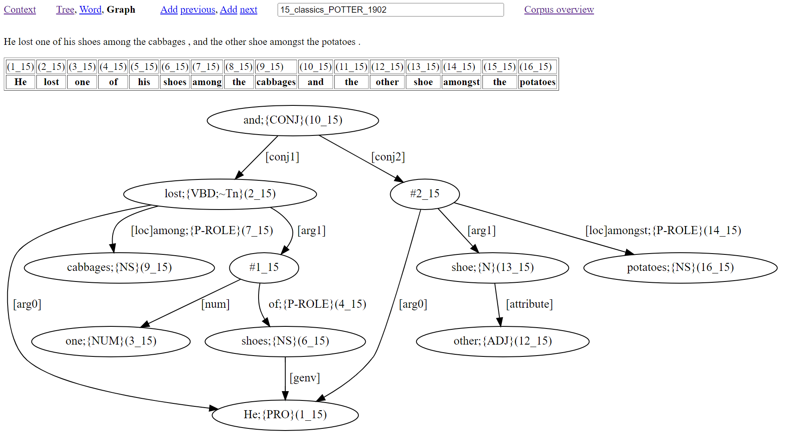The graph of Figure 18 has two verbs connected by [conj1] and [conj2] arrows from and(15_10) occurring topmost in the graph. While the verb of the first conjunct is overt with lost(15_2), the content for the verb of the second conjunct is shown as #15_1002 to indicate the licensed absence of a verb (a lost lost!). One further instance of ‘#’ occurs in the graph (referenced as #15_1001) to indicate a nominal head absence that has [num] (numeral modifier) and ‘of’ (role preposition) links. Note that the indexing with ‘#’ involves two numbers without round brackets. The first number says which solution sentence the elided content belongs to. The second number follows a count of the number of elided instances that occur within the sentence, initialised at 1000. This gives indexing that is distinct from the word location indexing within round brackets that accompanies each word.
Butler, Alastair. 2021. Meaning representations from treebanks. The Treebank Semantics Web Site. Available at: http://www.compling.jp/ajb129/ts.html.
Cowie, A P. 1989. Oxford Advanced Learner's Dictionary, Fourth Edition. Oxford: Oxford University Press.
Dekker, Paul. 2012. Dynamic Semantics, vol. 91 of Studies in Linguistics and Philosophy. Dordrecht: Springer Verlag.
Hunt, J. W. and M. D. Mcilroy. 1975. An algorithm for differential file comparison. computer science. Tech. rep., Bell Laboratories Computing Science Technical Report #41.
Kamp, Hans and Uwe Reyle. 1993. From Discourse to Logic: Introduction to Model-theoretic Semantics of Natural Language, Formal Logic and Discourse Representation Theory. Dordrecht: Kluwer.
Magloire, Alain et al. 2021. GNU Grep: Print lines that match patterns, version 3.7. Free Software Foundation.
Randall, Beth. 2009. CorpusSearch 2 Users Guide. Available at: http://corpussearch.sourceforge.net/CS-manual/Contents.html.Rohde, Douglas. 2005. TGrep2 User Manual version 1.15. Available at: https://github.com/andreasvc/tgrep2.